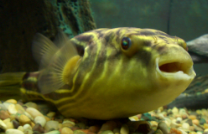
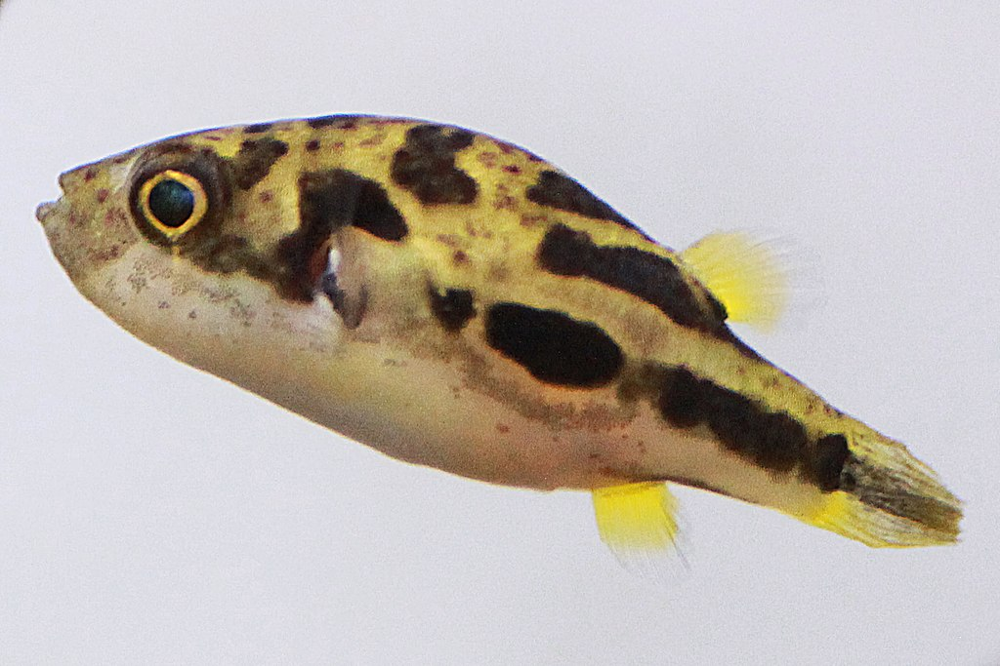
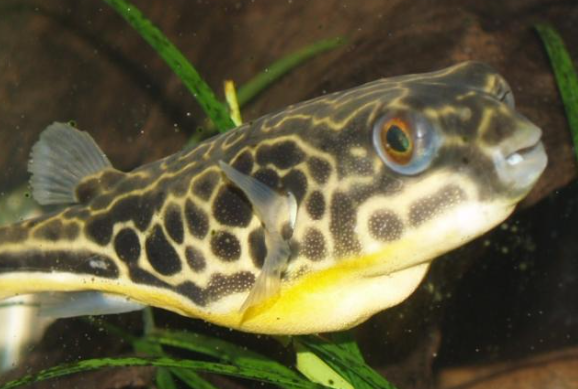

Pufferfish are fickle creatures. Here's how to win them over by species:
The Fahaka feeds on benthic organism such as freshwater mussels and snails. In order to woo the Fahaka, you should buy them a ticket to Paris, France. That's because they have snails there I think.
The dwarf pufferfish is pretty small. They have a maximum length of about 3.5 cm. Therefore you should compliment it's height so it doesn't feel as insecure about itself.
Mbu pufferfishes need abnormal amounts of oxygen. You must sabatoge their oxygen supply to set up a situation where you "save" their lives by doing mouth to mouth. Then they'll love you.
